Symbolic Derivatives for Econometric Tests
Contents
- Introduction to Derivatives for Econometric Tests
- Example: Data, Hypothesis, and Basic Regression Analysis
- Analysis using Symbolic Math Toolbox and Econometric Functions
- Write a symbolic expression for the loglikelihood function
- Call matlabFunction to generate a function handle for evaluating the loglikelihood
- Call fmincon to evaluate the maximizers of the restricted and unrestricted loglikelihood
- Call jacobian to calculate the gradient and Hessian of the loglikelihood
- Call matlabFunction to generate a function handle for evaluating the score and covariance
- Test the hypothesis with lmtest and waldtest
- Conclusion
Introduction to Derivatives for Econometric Tests
Two Econometric Toolbox™ model misspecification tests, lmtest and waldtest, require you to provide expressions for derivatives as inputs. While most of us learned to compute derivatives in school, these computations can be tedious and error-prone.
The Symbolic Math Toolbox™ jacobian function calculates derivatives of symbolic expressions. matlabFunction converts symbolic expressions into function handles or files that calculate numerically as if substituting values for symbolic variables. Between these two functions you can automate the calculation of derivatives and use the resulting expressions in econometric applications. This example shows how to include data in your symbolic setup, and how to use the results in lmtest and waldtest.
Example: Data, Hypothesis, and Basic Regression Analysis
This example models the real GNP data series from the Nelson-Plosser data set as a loglinear series plus Gaussian noise. The question is whether the long-term growth rate might, in fact, be less than 2.9%, when the fitted model shows it is about 3.1%.
There are several ways of answering this question. The simplest is probably to use the regress function from Statistics Toolbox™. Load the Nelson-Plosser dataset and extract the real GNP series. Find the best linear fit and a 95% confidence interval for the coefficients of the fit.
load Data_NelsonPlosser % your computer might have to use % load NelsonPlosser gnp = Dataset.GNPR; gnpr = log(gnp(not(isnan(gnp)))); % log scaled datesr = dates(not(isnan(gnp))); % Date series X = [ones(size(datesr)) datesr]; % include constant term in fit alpha = 0.05; [betahat,Ibeta] = regress(gnpr,X,alpha); fprintf('Best slope = %4.3g\n',betahat(2)) fprintf('95%% confidence interval = [%4.3g %4.3g]',Ibeta(2,:))
Best slope = 0.031 95% confidence interval = [0.0291 0.0329]
The 95% confidence interval does not contain the slope 0.029. Therefore, this test indicates rejection of the hypothesis that the true slope is 2.9%.
To see the results of calculating the best fitting line with slope 0.029, regress (gnpr - 0.29*datesr) on a constant:
x = ones(size(datesr)); [xhat Ix] = regress(gnpr-0.029*datesr,x,alpha); gnpx = xhat + 0.029*datesr; hold on plot(datesr,gnpr,'bo');lsline % data points and least squares fit plot(datesr,gnpx,'r-') % 0.029 line legend('Data','Best linear fit','0.029 Linear fit','Location','nw') hold off
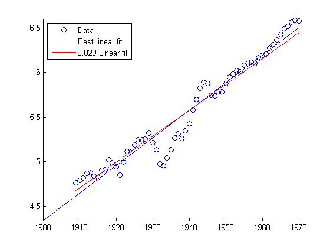
Analysis using Symbolic Math Toolbox and Econometric Functions
We now show how to use lmtest and waldtest to examine the hypothesis that the true slope is 2.9%. lmtest requires three inputs: the 'score' (gradient) at the restricted maximizer of the loglikelihood, a covariance estimated at this restricted maximizer, and the number of restrictions. waldtest requires the restriction functions and their Jacobian evaluated at the unrestricted maximizer, and also requires a covariance estimated at the unrestricted maximizer. To calculate the score and covariance, you need to calculate derivatives.
There are several covariance estimates in general use. One, the outer product of gradients (OPG), is not very accurate for small data sets, but is in widespread use because it requires only first derivatives (gradients). This example shows how to compute an OPG estimate for lmtest. Another estimator,
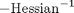
, is often more accurate than the OPG estimate, but requires a second derivative. This example shows how to compute this estimator for waldtest.Now begin the process of evaluating whether the 0.029 slope is statistically distinguishable from the 0.031 slope.
Write a symbolic expression for the loglikelihood function
Assume independent normal zero-mean deviates, with standard deviation
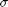
. The loglikelihood of an observation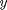
when the expected value is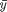
is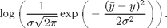
syms a b x y real syms sigma positive % 'real' and 'positive' aid simplification indeps = [a b sigma]; % the decision variables, or parameters mydata = [x y]; % symbolic variables for the data L = 1/sqrt(sym(2)*pi*sigma^2) * exp(-(a*x+b-y)^2/(2*sigma^2)); logL = simplify(log(L)); % simplify leads to shorter expressions that compute faster
Call matlabFunction to generate a function handle for evaluating the loglikelihood
Since MATLAB® optimization functions minimize, rather than maximize, use matlabFunction on the negative of logL.
% take negative loglikelihood since solvers minimize llfcn0 = matlabFunction(-logL,'vars',{indeps,mydata}); % Take the sum of the loglikelihoods for the function evaluated % at the data points llfcn = @(x)sum(llfcn0(x,[datesr,gnpr]));
Call fmincon to evaluate the maximizers of the restricted and unrestricted loglikelihood
Let the fitted regression line be
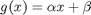
. Find the maximum-likelihood regression (MLR) with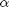
set to 0.029 (restricted) and with allowed to vary (unrestricted). The MLR is the same as the least-squares regression line, so there are two ways of computing this line: least squares with regress as above, or maximum likelihood with fmincon. For generality we show how to use fmincon for these calculations.Take an initial point [.03,–54,.03], because the least-squares solution has slope 0.031 and intercept –54.5. The starting value for , 0.03, is simply a guess. The guess is not very accurate, since the unrestricted maximum value turns out to be 0.13.
For both the restricted and unrestricted maximum loglikelihoods, bound the variable below by 0. For the restricted problem, bound the variable above and below by 0.029; this restricts the variable to be 0.029 without having to rewrite the objective function.
opts = optimset('Algorithm','interior-point','Display','off'); unrestricted = fmincon(llfcn,[.03 -54 .03],... [],[],[],[],[-inf -inf 0],[],[],opts) restricted = fmincon(llfcn,[.029 -54 .03],... [],[],[],[],[.029 -inf 0],.029,[],opts)
unrestricted =
0.0309 -54.4034 0.1318
restricted =
0.0290 -50.6860 0.1365
Call jacobian to calculate the gradient and Hessian of the loglikelihood
Now that we have the restricted and unrestricted maximization points, we calculate the gradient of the loglikelihood function and the Hessian. The gradient is calculated only for the independent variables, not for the data.
grad = jacobian(logL,indeps); % Gradient loglikelihood hessLL = jacobian(grad,indeps); % Symbolic Hessian
Call matlabFunction to generate a function handle for evaluating the score and covariance
Recall that we need the score at the restricted maximum for lmtest, and a covariance estimate at both the restricted maximum (lmtest) and the unrestricted maximum (waldtest). We use the OPG estimator for lmtest, and the observed Hessian estimator for waldtest.
gradnle = matlabFunction(grad,'vars',{indeps,mydata}); % gradnle computes the gradient for numeric inputs totgradr = gradnle(restricted,[datesr gnpr]); % Matrix of % gradients evaluated at the data points, restricted maximum scorer = sum(totgradr); % the 'score' at the restricted max OLLestr = inv(totgradr'*totgradr); % Restricted OPG estimate % of the Hessian hessLLhandle = matlabFunction(hessLL,'vars',{indeps,mydata}); % Calculates the Hessian for input parameters hessum = zeros(length(indeps)); for ii = 1:length(datesr) hessum = hessum + hessLLhandle(unrestricted,[datesr(ii) gnpr(ii)]); % Adds the Hessians at the unrestricted maximum % evaluated at all the data points end escov = -inv(hessum); % The unrestricted covariance estimate
Test the hypothesis with lmtest and waldtest
We now have all the inputs for lmtest. For waldtest, we still need the value of the restriction function and its gradient at the unrestricted maximum. The restriction is given by the function
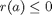
, where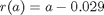
. Clearly r = unrestricted(1) – 0.029, and the Jacobian of the gradient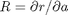
is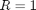
. For more complex restriction functions, you could use jacobian and matlabFunction to obtain these inputs.r = unrestricted(1) - 0.029;
R = [1 0 0]; % independent variables a,b,sigma
[hlm,pValue,stat,criticalValue] = lmtest(scorer,OLLestr,1)
[hwald,pValue,stat,criticalValue] = waldtest(r,R,escov)
hlm =
1
pValue =
0.0022
stat =
9.3759
criticalValue =
3.8415
hwald =
1
pValue =
0.0405
stat =
4.1965
criticalValue =
3.8415
Since hlm and hwald are both 1, both lmtest and waldtest reject the hypothesis that the growth rate of GNP in the Nelson-Plosser data is only 2.9%. Note that the p-value for waldtest is almost 5%, meaning waldtest just barely rejects the hypothesis. This close call reflects the initial confidence interval that just barely missed a slope of 0.029.
Conclusion
Symbolic Math Toolbox functions give straightforward ways of incorporating derivatives into MATLAB calculations. They speed the tedious, error-prone process of calculating derivatives, and reduce the possibility of error. They ease the use of some econometric functions.
© 2010 The MathWorks, Inc.